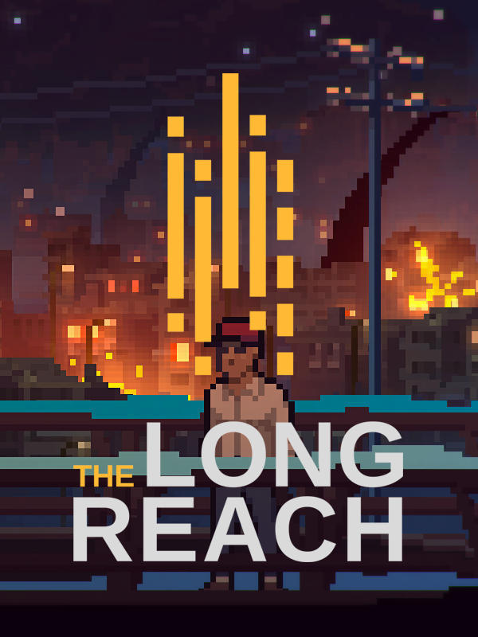

The Long Reach
The Long Reach
Details
|  | |
| Playtime | Not Played |
| Last Activity | Never |
| Added | 2024-11-25 0:21:11 |
| Modified | 2024-11-25 0:21:21 |
| Completion Status | Not Played |
| Library | Steam |
| Source | Steam |
| Platform | PC (Windows) |
| Release Date | 2018-03-14 |
| Community Score | 64 |
| Critic Score | 70 |
| User Score | |
| Genre | Adventure Indie Puzzle Role-playing (RPG) |
| Developer | Painted Black Games |
| Publisher | Merge Games |
| Feature | Single Player |
| Links | Facebook Official Steam GOG Twitch |
| Tag | |
Description

"Calm down. This is all normal. Well, it’s a new normal. There was a malfunction that we can’t fix yet, but with your help I can make symptoms bearable. We’re all in the same boat here and should help each other."
"I’m Shelly, a lead scientist in General Education research facility. The job title is longer, but it’s not important. Here’s what I know so far, though."
"The experience-sharing program that we were studying went haywire. Maybe it’s that black box, maybe something else. The main symptom for you is that your nightmares and dreams no longer require sleeping to manifest. These hallucinations is all your subconscious. It turns out that given enough time with it, we go insane. But we can fix that."

The Long Reach is an adventure game filled with colorful characters, puzzles, and a shock of discovery. Wait, weren't we supposed to say “joy of discovery”? That can’t be right.
The Long Reach takes place in New Hampshire, in the fictional town of Baervox. The game draws its inspiration from Lone Survivor and The Cave and all the classical adventures (except that The Long Reach is set in the present day). You don't play in a post-apocalyptic world or explore a fairy-filled fantasy world. You’re in the thick of it, just around the corner from the place where you buy your groceries.

- The Long Reach is a horror-thriller hell bent on screwing with your perception of things.
- The game misuses stunning pixel art to create gruesome and unsettling images.
- You’ll be playing as Calvin throughout the game - this is an example of the lies and deception that we have in store for you.
- You won’t be forced to figure everything out. Escape if you wish, in fact we encourage you to run for your life!
- Solve puzzles that require thinking outside the box. The box provided by our publisher was never used during the development.
- You’ll be able to talk with plenty of characters. In fact, you’ll have a chance to pitch in every five lines or so.
- A classic adventure game inventory filled with keys and weird stuff (note: no Elvish swords glowing faintly blue when evil is close in this game).
- Original atmospheric and haunting soundtrack. The composer's not right in the head, he brought weird stuff home to use in the soundtrack. We’re all concerned for his cat.